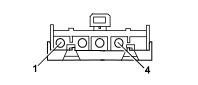

H080 AIR CONDITIONING CONTROLS (HEATER)
- Path
- Electrical equipment > 3 CONNECTORS > H MANUAL ELECTRIC CONTROLS > H080 AIR CONDITIONING CONTROLS > H080 AIR CONDITIONING CONTROLS (HEATER)
- Kind
- connector pinout (pin -> wire colour -> other end)
- Applies to
- all engines; all production periods
- Interactive page
- https://sloeber94.github.io/elrnDB-fPnd/en/#/169003231
Applies to: all engines; all production periods

Wiring | Colour |
|---|---|
- |
Pin | Cable | Destination | |||
|---|---|---|---|---|---|
Sec.. | Colour | Node | Connect. | Pin | |
1 | 2,5 | N (black) | X | 3 | |
See G045A AIR CONDITIONING/HEATER CONTROLS LIGHT (AIR CONDITIONING) | 1 | ||||
See G045B AIR CONDITIONING/HEATER CONTROLS LIGHT (AIR CONDITIONING) | 1 | ||||
2 | 1 | H (grey) | 1 | ||
3 | 1,5 | VN (green with black stripe) | 2 | ||
4 | 2 | LN (blue with black stripe) | 3 | ||
5 | 2,5 | HN (grey with black stripe) | X | 1 | |
4 | |||||